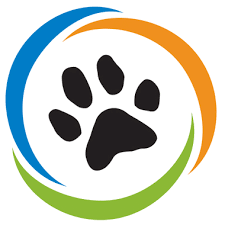

Wildlife Conservation Network

African Wildlife Foundation
An endangered species is a species that is very likely to become extinct in the near future, either worldwide or in
a particular political jurisdiction. Endangered species may be at risk due to factors such
as habitat loss, poaching and invasive species. The International Union for Conservation of Nature (IUCN)
Red List lists the global conservation status of many species, and various other agencies assess
the status of species within particular areas. Many nations have laws that protect conservation-reliant
species which, for example, forbid hunting, restrict land development, or create protected areas.
Some endangered species are the target of extensive conservation efforts such as captive breeding and
habitat restoration. Human activity is a significant cause in causing some species to become endangered.
The purpose of this website is to raise awareness about endangered animals and our effect on them and
their habitat. On this website you can find a space to send in comments and questions, you can donate, and
and you can also find out more information about the different endangered species. Further down this page
you can find a list of organizations that can help you do more for these animals.